| 日付 | 2014年1月19日（日） |
|---|---|
| 山域 | 高尾周辺 |
| メンバー | グループ（男4女8子供4） |
| 山行形態 | 子連れ日帰り |
| アクセス | 電車、バス |
| ルート (Map) | 小仏 (10:20) - (11:45) 景信山 (14:40) - (15:34) 小仏 |
毎年恒例になってきた景信山での餅つき。
今年も登山仲間数名と景信山で餅つきを行う。
小仏バス停到着。標高290m。
今年もバスは大混雑。バス停は長蛇の列ができていて、30分遅れでようやく到着する。
毎年これなのだから時刻表を見直した方が良いと思うのだが…

最初は車道を歩いていく。我々は2歳の子連れで足が遅いため、
皆がトイレに行っている間に先行して歩き始める。
地面には薄らと雪が積もっている。幸い凍り付いていないためあまり滑らない。
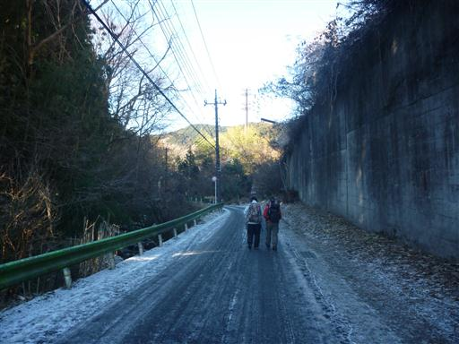
15分ほどで登山道入口に到着する。
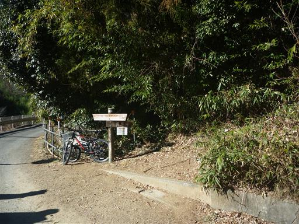
餅つきの時間予約があるため、足の速い登山仲間たちは我々を追い抜いて行く。
我々家族は明るい尾根道をのんびりと登っていく。
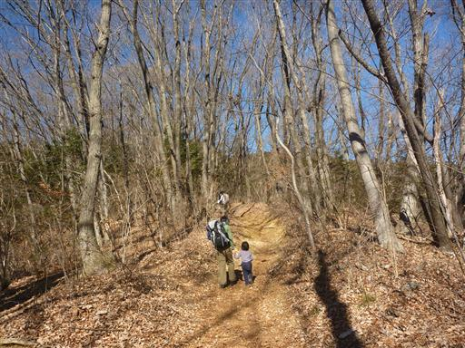
登山道の真中に小さな木が芽を出している。
何十年後かには登山道をふさぐほど大きな木になるかもしれない。
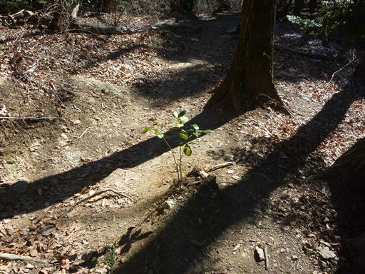
山頂直下は少し傾斜のきつい階段が続く。本日は快晴だ。
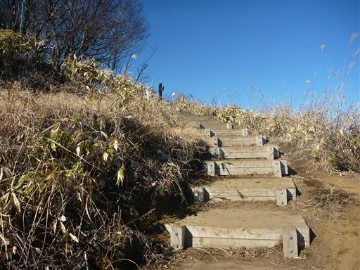
景信山の山頂に到着する。標高727m。
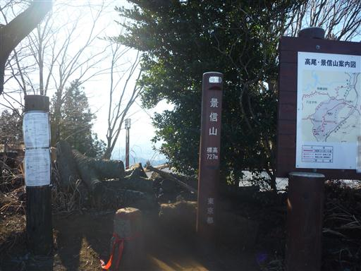
富士山の方面だけ木が切り開かれている。
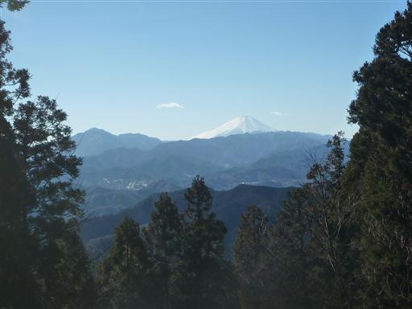
こちらは町の景色。今日は空気が澄んでいるため遠くまで見通すことができる。
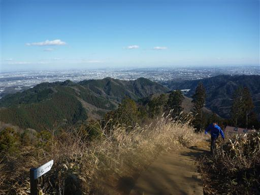
今回もかげ信小屋を利用。早速餅つきを開始する。
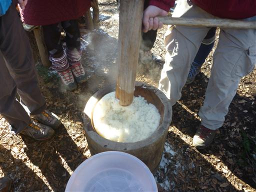
できた餅は小さくちぎって、あんこ、きなこ、醤油などをつけていく。
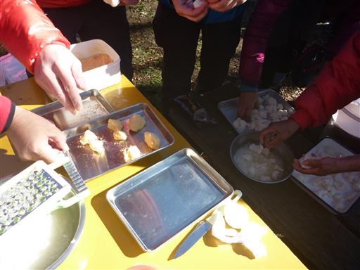
餅と持ち寄った酒とつまみで宴会を始める。
昨年に比べ本日は寒いのが少々辛いところだ。
娘は一口大の餅をパクパク食べている。
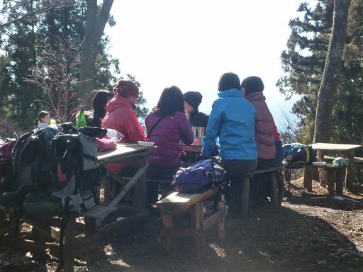
小屋の中にはストーブがあるので、寒くなったらここで暖をとることができる。
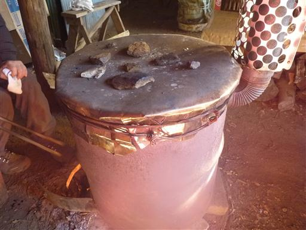
宴会を終えたら下山開始。もう山頂はすっかり人が少なくなっている。
餅つきをしている人は多いのだが、寒いからか山頂で長居する人は少ないようだ。
長い宴会で娘は疲れているので、帰りはベビーキャリアに乗せてあげる。
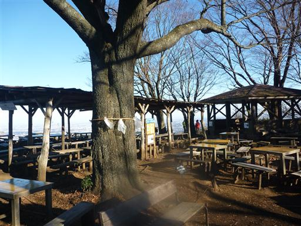
小仏バス停に下山。
子供は2人に増えたが、娘はだいぶ成長して大人しくしていられるようになったので
昨年よりもゆっくりおしゃべりすることができた。